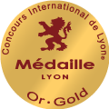
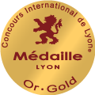

- Accueil
- BOUTIQUE VINS
- SÉLECTION VINS ROUGES
Vin Rouge
🍇 Une envie de tannins ? C’est un vin rouge qu’il vous faut ! Robuste, corpulent, épicé, généreux, raffiné, léger, avec des arômes floraux ou fruités, vous trouverez de quoi combler vos attentes avec cette sélection haute en couleur ! Pour des prix canons pour ne pas mettre votre portefeuille dans le rouge, c'est ici que ça se passe :) Bordeaux, Côtes du Rhône, Bourgognes, Languedocs ou encore vins de Loire ... Retrouvez des promos jusqu'à -30% et / ou des bouteilles rares / en exlusivité !
BONS PLANS


 
Vins rouges par régions
Vins du Monde
Il faut de tout pour faire un monde : VINATIS vous propose des bouteilles juste épatantes, et renversantes à PRIX MINI ! Top départ pour l’Espagne, l’Italie, l’Afrique du Sud, la Nouvelle-Zélande, la Californie... Suivez le guide de nos TOP affaires !!!
Par cépages

à chaque occasion son vin rouge
QUEL VIN ROUGE POUR MON MARIAGE
Découvrez nos domaines & châteaux
ROUGE SUR ROUGE : PERSONNE NE BOUGE !
Si vous lisez ces mots, il y a fort à parier que vous faites partie de ceux qui lèvent volontiers le coude pour apprécier un bon verre de vin rouge ! Vous connaissez la maxime, « Blanc sur rouge, rien ne bouge, rouge sur blanc, tout fout le camp ! »… Mais pour les amoureux de tannins, la question ne se pose pas : L’ordre de service se résume simplement par l’envie de partager un bon moment, un verre de vin à la main. Et oui, pour les épicuriens épris de plaisirs culinaires, le rouge passe avant tout !
Alors ne partez pas ! Sur Vinatis, vous êtes au bon endroit pour faire le plein de tannins !
À LA RECHERCHE DU MEILLEUR VIN ROUGE ?
Châteauneuf-du-Pape, Saint-Emilion, Côte-Rôtie… Pinot Noir, Syrah… grand cru, millésime…tous ces mots vous disent quelque chose mais vous n’y connaissez rien ?
Choisir un vin n’est pas toujours aisé. Si vous recherchez le meilleur vin rouge pour accompagner votre repas ou pour offrir, laissez-vous guider par les sélections de nos experts ! Vins récompensés, grande cave, meilleures ventes, vins bios, magnums et vin en cubi : les sélections sont sur-mesure ! Profitez pour chacune des références de fiches ultra-détaillées précisant cépages, conseils de dégustation et accords mets-vins.
Encore plus simple, Vinatis vous propose une sélection pour chaque occasion ou en fonction de vos goûts ! Dites-nous tout : Le vin rouge, vous l’aimez fruité, boisé, puissant, léger ? C’est pour un apéro improvisé, une soirée en amoureux ou un repas de famille ?
VOIR LA VIE EN BORDEAUX ...
Si vous aimez le bon vin rouge, vous devez apprécier les grands vins de bordeaux connus dans le monde entier.
Issus d’un assemblage de plusieurs cépages les vins de Bordeaux possèdent des caractéristiques différentes d’une appellation à l’autre qui en font leur richesse et leur diversité. Selon l’assemblage réalisé, ces vins vont développer des tanins différents qui leur apporteront une complexité, une finesse et une richesse aromatique différentes.
Les principaux cépages que l’on peut retrouver dans le vin rouge du bordelais sont le cabernet sauvignon, le cabernet franc, et le merlot noir qui peuvent être majoritaires dans l’assemblage réalisé et auxquels peuvent être associés en petite quantité des cépages petit verdot, malbec, ou carmenère.
Cette grande diversité de cépages, alliée à la disparité des terroirs, à la différence d’ensoleillement d’une année à l’autre et aux particularités de chaque assemblage, donne naissance à une très grande variété de vin rouge de très haute qualité.
DU BON VIN ROUGE AU MEILLEUR PRIX !
Chez Vinatis, on ne saurait vous conseiller sans proposer de sélections adaptées à votre budget ! Nos plus fortes promo, sélection à moins de 10€, par ici les bonnes affaires et les petits prix ! Évidemment, le rapport qualité/prix est incomparable : Dégustations après dégustations, nos sommeliers ont débusqué autant les bouteilles de consommation courante que les cuvées d’exception à garder en cave. Du vin intimiste de petit vigneron aux grands crus de domaines incontournables, nos experts mettent en avant le prix et la qualité !
… Quant à la sélection fins de lots et déstockage, inutile de vous le dire : Il faut tout liquider !
Toutes nos références vous attendent dans des conditions de stockage optimales. Livraison soignée possible en 24h et cartons renforcés.
QUI MIEUX QUE VINATIS POUR VOUS FAIRE ROUGIR DE PLAISIR ?
Nos experts ont mis au point des sélections bien aiguisées ! Et il va y avoir du rouge ! Seuls les vins retenus à la dégustation pour leur rapport qualité/prix vous sont présentés.
Devant la richesse des terroirs et des cépages, les amateurs de grands crus s’émoustilleront en parcourant les appellations de France : retrouvez vos AOC préférées en bourgogne rouge, bordeaux rouge, mais aussi vins rouges du Rhône, de Loire, du Beaujolais, de Corse… Quant aux plus curieux, d’un continent à l’autre, ils étancheront leur soif d’inconnu en s’accordant une virée parmi les vins du monde en de nombreuses escales : Départ imminent avec nos sélections de vins italiens, vins espagnols, vins suisses, vins hongrois, vins californiens, vins chiliens, vins argentins, d’Afrique du Sud, ou encore de Nouvelle-Zélande. Un tour du monde des saveurs qui pourrait bien changer vos habitudes de consommation. Seule constante… la couleur du vin bien sûr : rouge cœur !
Alors n’attendez plus pour vivre votre passion du vin !
À LIRE SUR LE BLOG DE VINATIS :
COMMENT FAIT-ON DU VIN ROUGE ?
Nous vous invitons à vous rendre sur cette page pour comprendre les nuances de couleur entre les vins rouges et les étapes de vinification, de la vigne à la bouteille.
QUEL VIN ROUGE POUR MON MARIAGE ?
Comme beaucoup de clients qui nous ont dit « OUI », profitez des conseils de nos experts : Adressez-nous votre menu, recevez votre pack de dégustation, estimez la quantité.